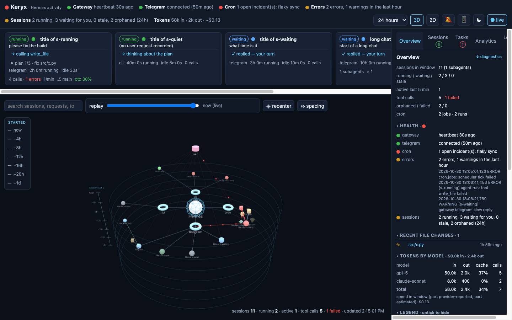
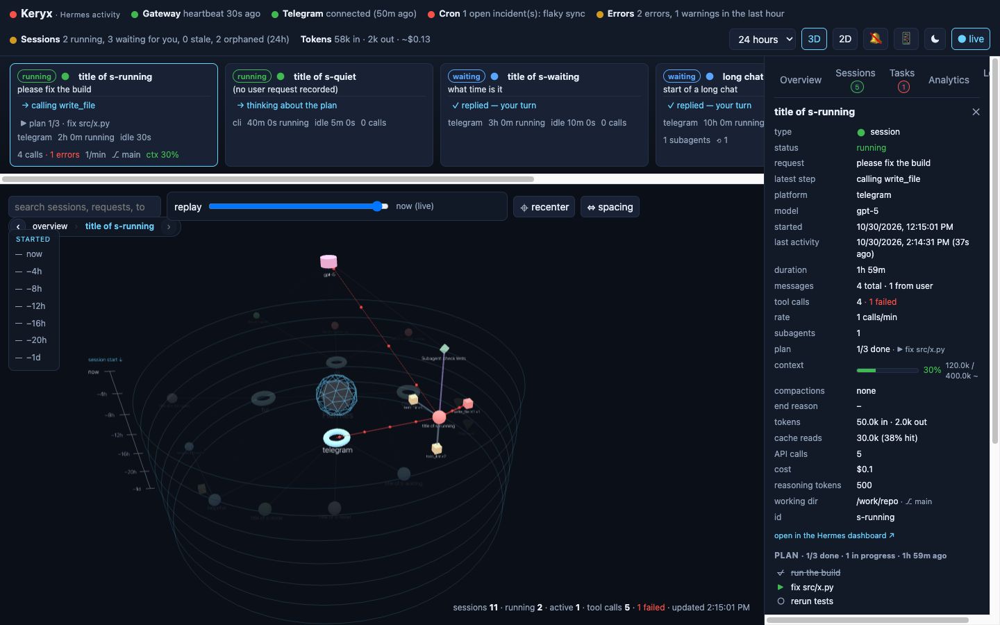
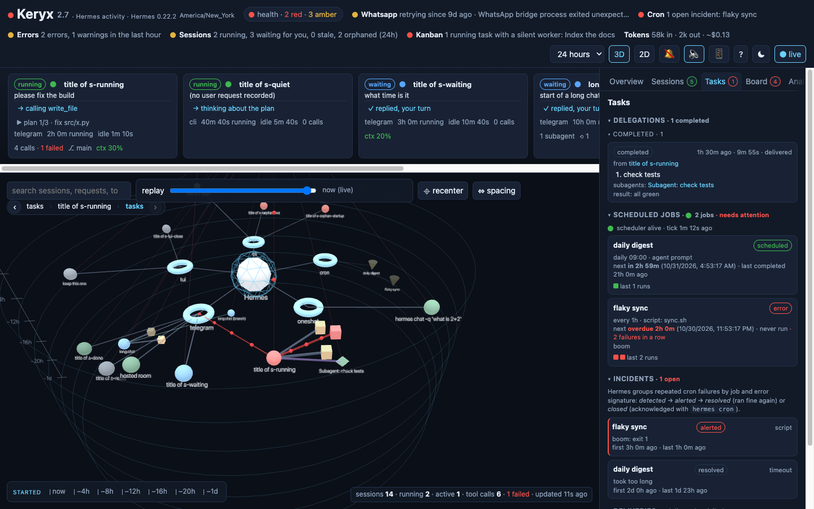
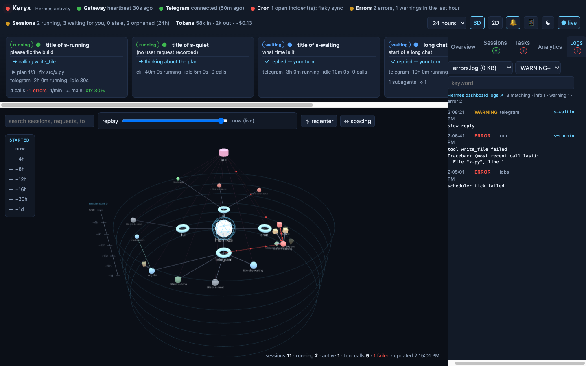

Keryx is a live, read-only activity monitor. It reads the agent's own records (its SQLite state, cron store and logs) without touching them, and draws them as a 3D force graph where shape, colour and position each carry one meaning.

Keryx opens Hermes' files and never writes them. It never calls the agent or its API. Every number on the page comes from what Hermes itself recorded, read through snapshot copies that refresh when a file changes.
One watcher follows the data files and pushes a server-sent event to every open page the moment something changes. Running sessions breathe; active links carry particles at the session's call rate.
A small container (FastAPI + React) on port 9120 that mounts the Hermes data directory. Works with a native install or the official Hermes Docker image, on the same host. Nothing to install into Hermes.
Every node obeys the same three-part grammar, so once you have read one session you can read the whole graph at a glance.
Hermes is the faceted core at the centre. Tool cubes are sized by call count and turn red when a call failed; model cylinders are sized by tokens.
"Waiting for you" means the last message is Hermes' reply and the chat is open: the next move is yours. Failures come from the JSON result Hermes stores for each tool call, not from keyword matching. Anything touched in the last five minutes glows.
Each platform (Telegram, TUI, CLI, cron…) owns a wedge around the hub and its sessions sit inside it, ordered by start time. A labelled time axis runs down the side: in 3D the rings step downward from "now", in 2D they grow outward. Opacity fades with age. Subagents orbit the session that spawned them; tools cluster around the session that called them; models sit on a shelf above; cron jobs fan out below.

gateway_state.json, one check per messaging platform as the gateway reports it (with the error it recorded when one is retrying), cron scheduler, the error log, session states, and the kanban board when it has tasks, each green / amber / red; the worst one drives the title dot.~ when it is an estimate rather than a provider-reported figure.todo_list: done / total and the step in progress./branch stay separate, joined to their origin; delegated subagents keep their purple link.+added −removed for file edits; Hermes' own events (model switch, steer, auto-continue, delegation results) in place.hermes -r …), one click to copy.#tags in titles become filter chips; ☆ pins a session to the top; live ones always first.context_length_cache.yaml) or set in its config, and a breakdown under each session says what fills it: your messages, replies, tool-call arguments and tool output by tool.kanban.db: eight lanes from triage to done, workers that claim cards and heartbeat while they run. The board tab shows it in Hermes' own lane order, with a board switcher when there are several.hermes kanban and the dashboard.MEMORY.md (your environment and conventions) and USER.md (your preferences). A read-only tab shows them as entries with their character budgets, Hermes' on/off switches and anything Hermes blocked as prompt injection.KERYX_SHOW_MEMORY=1; the diagnostics download never includes it.#session:…, #cron:…) is a deep link you can share, or scan from the QR popover to open on your phone, where "add to home screen" keeps Keryx as an app.HERMES_DASHBOARD_URL and every session, cron job and the logs tab gets an "open in the Hermes dashboard" link. Keryx never calls the dashboard; the links are for you.

You need a Hermes Agent install whose data directory you can read, and Docker or Python 3.11+. Node is not required: a prebuilt image is published for every release.
git clone https://github.com/rafreid/keryx.git
cd keryx
./quickstart.shIt finds the Hermes data directory (~/.hermes for a native install, /opt/hermes-data or /opt/data for the Docker install), works out which user owns it, pulls the image and starts Keryx with Docker Compose. Without Docker it falls back to a Python virtualenv. --build builds from source, --python skips Docker, HERMES_HOME=… points at another directory.
Keryx listens on http://localhost:9120/. curl localhost:9120/api/health should answer with "state_db": true; if it is false, the data path is wrong or not readable by the Keryx user.
# in docker-compose.yml, under the keryx service
- HERMES_DASHBOARD_URL=http://192.168.1.100:9119 # "open in the Hermes dashboard" links
- KERYX_TOKEN=change-me # one shared token for /api; the page asks onceHERMES_UID and HERMES_GID to Compose ($(id -u) for a native install, 10000 for the official Hermes container unless you changed it).Paste the keryx service from the repository's docker-compose.yml into the compose file that runs Hermes, and mount the same host directory you give Hermes. The image is ghcr.io/rafreid/keryx:latest (amd64 and arm64).
Keryx shows everything Hermes recorded, including prompts and tool output. Bind the port to 127.0.0.1 and reach it over SSH or a VPN such as Tailscale, or set KERYX_TOKEN. Do not expose it to the internet. The only endpoint meant to be shared is the redacted diagnostics download.
| Variable | Default | Meaning |
|---|---|---|
HERMES_DATA | /opt/data | the Hermes data directory as seen by Keryx (the mount inside the container; HERMES_HOME is the host side for Compose) |
GRAPH_PORT | 9120 | port to listen on |
HERMES_DASHBOARD_URL | unset | where the Hermes dashboard (port 9119) is reachable from your browser; adds links on sessions, cron jobs and logs |
KERYX_TOKEN | unset | optional shared secret; every /api route except /api/health then needs it as a bearer header, cookie or ?token= |
KERYX_SHOW_MEMORY | unset | 1 adds the read-only memory tab (Hermes' MEMORY.md and USER.md); off by default because these are personal notes |
ACTIVE_WINDOW | 300 | seconds; a session touched this recently is "active" and its links carry particles |
STALE_AFTER | 1800 | seconds; a session mid-turn but idle for this long is shown as stale |
CONTEXT_LENGTH | 400000 | assumed context window for the gauge when the model family is not recognised (Hermes does not record it; such gauges are marked ~) |
From the Hermes data directory, read-only: state.db and its WAL (including Hermes' full-text index), gateway_state.json, context_length_cache.yaml and the model section of config.yaml, kanban.db and kanban/boards/*/kanban.db, plugin-data/hermes-achievements/state.json, cron/jobs.json, cron/executions.db, cron/incidents.db, cron/deliveries.db, cron/ticker_heartbeat, logs/*.log, the skill ledger skills/.usage.json and, only when asked, memories/ and the memory section of config.yaml. Files an older Hermes does not write are skipped and columns are feature-detected, so Keryx keeps working across Hermes versions. The volume is mounted read-write only because SQLite in WAL mode needs to create its -shm file; Keryx itself never writes.
Everything the page shows is available as JSON on the same port.
| Endpoint | Returns |
|---|---|
GET /api/graph?hours=24[&at=…] | nodes and links; at replays the graph as of that moment; aliases maps compacted segment ids to their node |
GET /api/now | running and waiting sessions digest |
GET /api/status | health checks (one per platform), the ranked attention list, dashboard links, and the gateway's state and Hermes version |
GET /api/cost?hours=24 | tokens and cost per model with a cost_basis (actual, estimated, included, unknown) |
GET /api/tasks | delegations, cron jobs with history and incidents, scheduler heartbeat, incidents, delivery queue, kanban counts |
GET /api/kanban?board=… | the kanban board as lanes; /api/kanban/{task_id} is one card with comments, runs and events |
GET /api/analytics?days=30 | daily trend with cost, a year heatmap, model share, skill ledger, totals, provider mix, hour-of-day clock, velocity, insights, achievements |
GET /api/search?q=… | sessions whose conversation mentions the text, with snippets (Hermes' FTS5 index) |
GET /api/memory | memory entries and budgets, only with KERYX_SHOW_MEMORY=1 |
GET /api/session/{id}/trace | ordered steps across every segment of a compacted conversation; tool calls carry kind, title, diff summary, exit code; thinking steps carry the model's reasoning |
GET /api/session/{id}/todo | the agent's current plan |
GET /api/session/{id}/context | what fills the context: characters by part and by tool |
GET /api/logs?file=…&level=…&q=… | log entries with level, logger and session id |
GET /api/diagnostics | redacted snapshot for bug reports |
GET /api/stream?hours=24 | server-sent events, one update per data change |
GET /api/health | liveness |